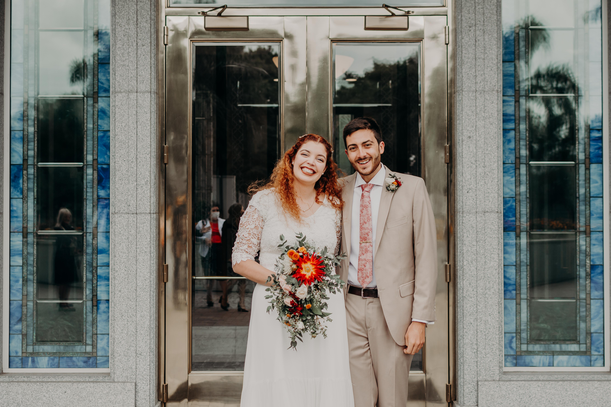

Un poco sobre mi...
Sé que hay una pestaña sobre mi, pero todavia no está desarrollada del todo y queria poner algo al inicio. Soy Gonzalo, tengo 28 años y estoy casado con Ornella. Estoy intentando terminar Ingenieria Quimica, pero me estoy tirando para la programacion, estudiando con la carrera brindada por CEPIT y ademas online en Brigham Young University, Idaho. No mucho más por ahora.
